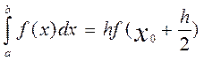
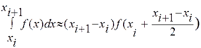
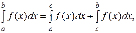
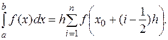

ФОРМУЛА ПРЯМОКУТНИКІВ
Розглянемо, спочатку, найпростіші методи із класу методів Ньютона-Кортеса, в яких підінтегральну функцію f(x) замінюють поліномом нульового степеня, тобто константою. Така заміна є неоднозначною, оскільки константу можна вибрати рівною значенню підінтегральної функції в будь-якій точці інтервала інтегрування. Наближене значення інтеграла, а такому випадкові, трактується як площа прямокутника,
Така заміна є неоднозначною, оскільки константу можна вибрати рівною значенню підінтегральної функції в будь-якій точці інтервала інтегрування. Наближене значення інтеграла, в такому випадкові, трактується як площа прямокутника, одна із сторін якого є довжиною
малюнок 1
одна із сторін якого є довжиною відрізка інтегрування, а інша – вибраною константою. Це і спонукало до такої назви метода. В якості константи можна вибрати значення функції в лівому кінці інтервала інтегрування (метод лівих прямокутників), або значення підінтегральної функції у правому кінці інтервала інтегрування (метод правих прямокутників).
малюнок 2
Xo Xo+H/2 X1 X
У згаданих вище випадках, визначений інтеграл замінюється нижньою або верхньою сумами Дарбу, які дають досить високу похибку обчислення.
Нехай в ролі константи виступає середина відрізка інтегрування
 . Проінтерполюємо f(x) на заданому відрізку многочленом нульового степеня, який у точці збігається із f(x). Тоді (5) перепишеться так:
. Проінтерполюємо f(x) на заданому відрізку многочленом нульового степеня, який у точці збігається із f(x). Тоді (5) перепишеться так:

Розіб’ємо тепер інтервал інтегрування на n рівних частин точками
і до кожного із отриманих відрізків розбиття [] (i = 0,1,…,n), застосуємо формулу (6). Отримаємо:
 (i=0,1,…,n).
Застосувавши відому властивість визначеного інтеграла, яка говорить, що яким би не були числа a,b,c завжди має місце рівність

для проведеного розбиття відрізка [a;b], отримуємо загальну формулу прямокутників:

Останню формулу називають формулу середніх прямокутників.
Метод середніх прямокутників, у випадку значної кількості точок розбиття відрізку інтегрування, дає найкращий результат обчислення. Але його не можна застосувати, якщо підінтегральна функція f(x) отримана внаслідок проведення експерименту, як скінченого набору вузлів, оскільки у цьому випадку невідомим є значення в середніх точках. У таких випадках використовується інші методи Ньютона-Кортеса.